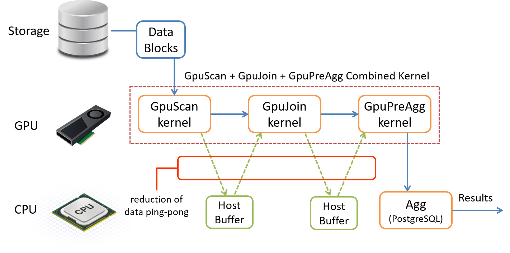

基本的な操作
GPUオフロードの確認
クエリがGPUで実行されるかどうかを確認するにはEXPLAINコマンドを使用します。
SQL処理は内部的にいくつかの要素に分解され処理されますが、PG-StromがGPUを適用して並列処理を行うのはSCAN、JOIN、GROUP BYの各ワークロードです。標準でPostgreSQLが提供している各処理の代わりに、GpuScan、GpuJoin、GpuPreAggが表示された場合、そのクエリはGPUによって処理される事となります。
以下はEXPLAINコマンドの実行例です。
postgres=# EXPLAIN SELECT cat,count(*),avg(ax)
FROM t0 NATURAL JOIN t1 NATURAL JOIN t2
GROUP BY cat;
QUERY PLAN
--------------------------------------------------------------------------------
GroupAggregate (cost=989186.82..989190.94 rows=27 width=20)
Group Key: t0.cat
-> Sort (cost=989186.82..989187.29 rows=189 width=44)
Sort Key: t0.cat
-> Custom Scan (GpuPreAgg) (cost=989175.89..989179.67 rows=189 width=44)
Reduction: Local
GPU Projection: cat, pgstrom.nrows(), pgstrom.nrows((ax IS NOT NULL)), pgstrom.psum(ax)
Combined GpuJoin: enabled
-> Custom Scan (GpuJoin) on t0 (cost=14744.40..875804.46 rows=99996736 width=12)
GPU Projection: t0.cat, t1.ax
Outer Scan: t0 (cost=0.00..1833360.36 rows=99996736 width=12)
Depth 1: GpuHashJoin (nrows 99996736...99996736)
HashKeys: t0.aid
JoinQuals: (t0.aid = t1.aid)
KDS-Hash (size: 10.39MB)
Depth 2: GpuHashJoin (nrows 99996736...99996736)
HashKeys: t0.bid
JoinQuals: (t0.bid = t2.bid)
KDS-Hash (size: 10.78MB)
-> Seq Scan on t1 (cost=0.00..1972.85 rows=103785 width=12)
-> Seq Scan on t2 (cost=0.00..1935.00 rows=100000 width=4)
(21 rows)
実行計画の中に見慣れない処理が含まれている事に気が付かれたでしょう。
CustomScan機構を用いてGpuJoinおよびGpuPreAggが実装されています。ここでGpuJoinはt0とt1、およびt2とのJOIN処理を実行し、その結果を受け取るGpuPreAggは列catによるGROUP BY処理をGPUで実行します。
PostgreSQLがクエリ実行計画を構築する過程でPG-Stromはオプティマイザに介入し、SCAN、JOIN、GROUP BYの各ワークロードをGPUで実行可能である場合、そのコストを算出してPostgreSQLのオプティマイザに実行計画の候補を提示します。 推定されたコスト値がCPUで実行する他の実行計画よりも小さな値である場合、GPUを用いた代替の実行計画が採用される事になります。
ワークロードをGPUで実行するためには、少なくとも演算式または関数、および使用されているデータ型がPG-Stromでサポートされている必要があります。
intやfloatといった数値型、dateやtimestampといった日付時刻型、textのような文字列型がサポートされており、また、四則演算や大小比較といった数多くのビルトイン演算子がサポートされています。
詳細な一覧に関してはリファレンスを参照してください。
CPU+GPUハイブリッド並列
PG-StromはPostgreSQLのCPU並列実行に対応しています。
PostgreSQLのCPU並列実行は、Gatherノードがいくつかのバックグラウンドワーカプロセスを起動し、各バックグラウンドワーカが"部分的に"実行したクエリの結果を後で結合する形で実装されています。 GpuJoinやGpuPreAggといったPG-Stromの処理はバックグラウンドワーカ側での実行に対応しており、個々のプロセスが互いにGPUを使用して処理を進めます。通常、GPUへデータを供給するために個々のCPUコアがバッファをセットアップするための処理速度は、GPUでのSQLワークロードの処理速度に比べてずっと遅いため、CPU並列とGPU並列をハイブリッドで利用する事で処理速度の向上が期待できます。 ただし、GPUを利用するために必要なCUDAコンテキストは各プロセスごとに作成され、CUDAコンテキストを生成するたびにある程度のGPUリソースが消費されるため、常にCPU並列度が高ければ良いという訳ではありません。
以下の実行計画を見てください。
Gather以下の実行計画はバックグラウンドワーカーが実行可能なものです。1億行を保持するt0テーブルを4プロセスのバックグラウンドワーカとコーディネータプロセスでスキャンするため、プロセスあたり2000万行をGpuJoinおよびGpuPreAggで処理し、その結果をGatherノードで結合します。
# EXPLAIN SELECT cat,count(*),avg(ax)
FROM t0 NATURAL JOIN t1
GROUP by cat;
QUERY PLAN
--------------------------------------------------------------------------------
GroupAggregate (cost=955705.47..955720.93 rows=27 width=20)
Group Key: t0.cat
-> Sort (cost=955705.47..955707.36 rows=756 width=44)
Sort Key: t0.cat
-> Gather (cost=955589.95..955669.33 rows=756 width=44)
Workers Planned: 4
-> Parallel Custom Scan (GpuPreAgg) (cost=954589.95..954593.73 rows=189 width=44)
Reduction: Local
GPU Projection: cat, pgstrom.nrows(), pgstrom.nrows((ax IS NOT NULL)), pgstrom.psum(ax)
Combined GpuJoin: enabled
-> Parallel Custom Scan (GpuJoin) on t0 (cost=27682.82..841218.52 rows=99996736 width=12)
GPU Projection: t0.cat, t1.ax
Outer Scan: t0 (cost=0.00..1083384.84 rows=24999184 width=8)
Depth 1: GpuHashJoin (nrows 24999184...99996736)
HashKeys: t0.aid
JoinQuals: (t0.aid = t1.aid)
KDS-Hash (size: 10.39MB)
-> Seq Scan on t1 (cost=0.00..1972.85 rows=103785 width=12)
(18 rows)
下位プランの引き上げ
PG-StromはSCAN、JOIN、GROUP BYの各処理をGPUで実行する事が可能ですが、これに対応するPostgreSQL標準の処理を単純に置き換えただけでは困った事態が発生します。 SCANが終わった後のデータをいったんホスト側のバッファに書き戻し、次にそれをJOINするために再びGPUへとコピーし、さらにGROUP BYを実行する前に再びホスト側のバッファに書き戻し・・・といった形で、CPUとGPUの間でデータのピンポンが発生してしまうのです。
これを避けるために、PG-Stromは下位プランを引き上げて一度のGPU Kernelの実行で処理してしまうというモードを持っています。 以下のパターンで下位プランの引き上げが発生する可能性があります。
- SCAN + JOIN
- SCAN + GROUP BY
- SCAN + JOIN + GROUP BY

以下の実行計画は、下位プランの引き上げを全く行わないケースです。
GpuScanの実行結果をGpuJoinが受取り、さらにその実行結果をGpuPreAggが受け取って最終結果を生成する事が分かります。
# EXPLAIN SELECT cat,count(*),avg(ax)
FROM t0 NATURAL JOIN t1
WHERE aid < bid
GROUP BY cat;
QUERY PLAN
--------------------------------------------------------------------------------
GroupAggregate (cost=1239991.03..1239995.15 rows=27 width=20)
Group Key: t0.cat
-> Sort (cost=1239991.03..1239991.50 rows=189 width=44)
Sort Key: t0.cat
-> Custom Scan (GpuPreAgg) (cost=1239980.10..1239983.88 rows=189 width=44)
Reduction: Local
GPU Projection: cat, pgstrom.nrows(), pgstrom.nrows((ax IS NOT NULL)), pgstrom.psum(ax)
-> Custom Scan (GpuJoin) (cost=50776.43..1199522.96 rows=33332245 width=12)
GPU Projection: t0.cat, t1.ax
Depth 1: GpuHashJoin (nrows 33332245...33332245)
HashKeys: t0.aid
JoinQuals: (t0.aid = t1.aid)
KDS-Hash (size: 10.39MB)
-> Custom Scan (GpuScan) on t0 (cost=12634.49..1187710.85 rows=33332245 width=8)
GPU Projection: cat, aid
GPU Filter: (aid < bid)
-> Seq Scan on t1 (cost=0.00..1972.85 rows=103785 width=12)
(18 rows)
この場合、各実行ステージにおいてGPUとホストバッファの間でデータのピンポンが発生するため、実行効率はよくありません。
一方、以下の実行計画は、下位ノードの引き上げを行ったものです。
# EXPLAIN ANALYZE SELECT cat,count(*),avg(ax)
FROM t0 NATURAL JOIN t1
WHERE aid < bid
GROUP BY cat;
QUERY PLAN
--------------------------------------------------------------------------------
GroupAggregate (cost=903669.50..903673.62 rows=27 width=20)
(actual time=7761.630..7761.644 rows=27 loops=1)
Group Key: t0.cat
-> Sort (cost=903669.50..903669.97 rows=189 width=44)
(actual time=7761.621..7761.626 rows=27 loops=1)
Sort Key: t0.cat
Sort Method: quicksort Memory: 28kB
-> Custom Scan (GpuPreAgg) (cost=903658.57..903662.35 rows=189 width=44)
(actual time=7761.531..7761.540 rows=27 loops=1)
Reduction: Local
GPU Projection: cat, pgstrom.nrows(), pgstrom.nrows((ax IS NOT NULL)), pgstrom.psum(ax)
Combined GpuJoin: enabled
-> Custom Scan (GpuJoin) on t0 (cost=12483.41..863201.43 rows=33332245 width=12)
(never executed)
GPU Projection: t0.cat, t1.ax
Outer Scan: t0 (cost=12634.49..1187710.85 rows=33332245 width=8)
(actual time=59.623..5557.052 rows=100000000 loops=1)
Outer Scan Filter: (aid < bid)
Rows Removed by Outer Scan Filter: 50002874
Depth 1: GpuHashJoin (plan nrows: 33332245...33332245, actual nrows: 49997126...49997126)
HashKeys: t0.aid
JoinQuals: (t0.aid = t1.aid)
KDS-Hash (size plan: 10.39MB, exec: 64.00MB)
-> Seq Scan on t1 (cost=0.00..1972.85 rows=103785 width=12)
(actual time=0.013..15.303 rows=100000 loops=1)
Planning time: 0.506 ms
Execution time: 8495.391 ms
(21 rows)
まず、テーブルt0へのスキャンがGpuJoinの実行計画に埋め込まれ、GpuScanが消えている事にお気付きでしょう。
これはGpuJoinが配下のGpuScanを引き上げ、一体化したGPUカーネル関数でWHERE句の処理も行った事を意味しています。
加えて奇妙なことに、EXPLAIN ANALYZEの結果にはGpuJoinが(never executed)と表示されています。
これはGpuPreAggが配下のGpuJoinを引き上げ、一体化したGPUカーネル関数でJOINとGROUP BYを実行した事を意味しています。
SCAN処理の引き上げはpg_strom.pullup_outer_scanパラメータによって制御できます。
また、JOIN処理の引き上げはpg_strom.pullup_outer_joinパラメータによって制御できます。
いずれのパラメータもデフォルトではonに設定されており、通常はこれを無効化する必要はありませんが、トラブル時の問題切り分け手段の一つとして利用する事ができます。